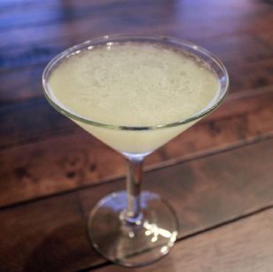

O Daiquiri é um cocktail refrescante e equilibrado que exemplifica a perfeita harmonia entre rum, lima e açúcar.
Método de Preparo
GuarniçãoNão aplicável. |
 |
As origens da criação do Daiquiri são um tanto controversas. Alguns acreditam que o cocktail foi criado em 1896 por um engenheiro americano, Jennings Cox, que vivia em Cuba na época e supervisionava as minas perto da cidade de Daiquiri. Pensa-se que ele criou o cocktail famoso depois de ficar sem gin durante uma festa de cocktails. Improvisando com os ingredientes que tinha à mão — rum, lima e açúcar — esta tornou-se a base da bebida que conhecemos hoje. O Daiquiri realmente ganhou vida num pequeno bar em Havana, quando o barman Constantino Ribalaigua Vert adicionou seu próprio toque e usou gelo raspado para criar o Daiquiri Frozen. Por volta desta época, Ernest Hemingway, que vivia em Cuba, experimentou o delicioso cocktail, apaixonou-se por esta concocção épica e tornou-se um cliente regular.